Every widget TradingView and Investing.com will let a page embed, mounted for real in a browser on 24 September 2026 and photographed. This page is the report; the shelf itself is at /prototypes/widget-scout/. Nothing was deployed and nothing was wired into the Hub.
Neither vendor sells a Fear & Greed gauge you can embed. CNN's is not embeddable and Investing.com does not put theirs in their widget kit. The closest borrowable thing is TradingView's Technical Analysis gauge — a speedometer that reads Strong buy / Neutral / Sell from moving averages and oscillators, per timeframe. It sits naturally beside our own Fear & Greed because it is the same shape of object: one dial, one word, one number. It measures something different (indicators, not crowd mood), so the label matters.
36 of 41 panels drew real content. Every TradingView widget worked. Every Investing.com widget failed: their server answered 403 to the embed from this machine, with and without our own domain as the referrer, so all four of their panels are black boxes below.
Each widget was mounted in a real headless browser, left to load, then judged three ways: what text sits inside its frame, how many distinct colours its screenshot contains, and how many network requests it caused. A panel with under 12 colours is empty — that is how the Investing.com boxes were caught. The first pass called them “rendered” because it only measured the box; the screenshots showed black, so the check was rewritten to look inside.
| Group | Widget | Source | Did it draw | Size seen | Cost alone | Where it could live |
|---|---|---|---|---|---|---|
| Sentiment | Technical Analysis gauge (SPY)technical-analysis | TradingView | DRAWS88 colours · 1% light | 450px tall | 37 requests | Right of Fear & Greed in SENTIMENT, per symbol in COMPANY |
| Sentiment | Technical Analysis gauge (AAPL, multi)technical-analysis | TradingView | DRAWS88 colours · 1% light | 450px tall | 37 requests | Right of Fear & Greed in SENTIMENT, per symbol in COMPANY |
| Sentiment | Technical Analysis (new web component)technical-analysis | TradingView (new) | DRAWS74 colours · 1% light | 450px tall | — | Right of Fear & Greed in SENTIMENT, per symbol in COMPANY |
| Sentiment | Investing.com Technical Summaryiframe | Investing.com | BLACK BOX5 colours · 0% light | 460px tall | — | — |
| Sentiment | Top movers (hotlists)hotlists | TradingView | DRAWS91 colours · 0% light | 450px tall | — | SENTIMENT or DASHBOARD |
| Breadth | Stock heatmap (S&P 500)stock-heatmap | TradingView | DRAWS203 colours · 2% light | 520px tall | 180 requests | DASHBOARD, full width |
| Breadth | ETF heatmapetf-heatmap | TradingView | DRAWS109 colours · 1% light | 480px tall | — | DASHBOARD or ALLOCATION |
| Breadth | Crypto heatmapcrypto-coins-heatmap | TradingView | DRAWS139 colours · 1% light | 440px tall | — | Not needed - no crypto room |
| Breadth | Forex heat mapforex-heat-map | TradingView | DRAWS127 colours · 1% light | 400px tall | — | ECONOMIC |
| Breadth | Market overviewmarket-overview | TradingView | DRAWS134 colours · 1% light | 460px tall | 65 requests | DASHBOARD sidebar |
| Breadth | Market summary (new)market-summary | TradingView (new) | DRAWS45 colours · 0% light | 220px tall | — | DASHBOARD strip |
| Breadth | World market summary (new)world-market-summary | TradingView (new) | DRAWS57 colours · 0% light | 420px tall | — | DASHBOARD |
| Breadth | Heatmap (new web component)heatmap | TradingView (new) | DRAWS96 colours · 0% light | 480px tall | — | DASHBOARD |
| Technicals | Advanced chartadvanced-chart | TradingView | DRAWS41 colours · 0% light | 520px tall | 166 requests / 1 KB | Station chart screen only |
| Technicals | Symbol overviewsymbol-overview | TradingView | DRAWS41 colours · 0% light | 420px tall | — | COMPANY |
| Technicals | Mini chartmini-symbol-overview | TradingView | DRAWS30 colours · 0% light | 250px tall | 44 requests | Inside a Hub tile |
| Technicals | Mini chart (new)mini-chart | TradingView (new) | DRAWS40 colours · 0% light | 250px tall | 44 requests | Inside a Hub tile |
| Technicals | Seasonal chart (new)seasonal-chart | TradingView (new) | DRAWS162 colours · 0% light | 420px tall | — | COMPANY or SENTIMENT |
| Technicals | Investing.com technical chartiframe | Investing.com | BLACK BOX4 colours · 0% light | 460px tall | — | — |
| Calendar | Economic calendarevents | TradingView | DRAWS92 colours · 1% light | 520px tall | 48 requests | ECONOMIC, beside our own calendar |
| Calendar | Investing.com economic calendariframe | Investing.com | BLACK BOX4 colours · 0% light | 520px tall | — | — |
| Calendar | Economic map (new)economic-map | TradingView (new) | DRAWS64 colours · 0% light | 480px tall | — | ECONOMIC |
| News | Top stories (all symbols)timeline | TradingView | DRAWS76 colours · 2% light | 480px tall | 39 requests | NEWS, as a second column |
| News | Top stories (one symbol)timeline | TradingView | DRAWS32 colours · 2% light | 480px tall | 39 requests | NEWS, as a second column |
| Fundamentals | Symbol infosymbol-info | TradingView | DRAWS18 colours · 0% light | 220px tall | 35 requests | COMPANY header |
| Fundamentals | Fundamental datafinancials | TradingView | DRAWS31 colours · 2% light | 520px tall | — | COMPANY |
| Fundamentals | Company profilesymbol-profile | TradingView | DRAWS31 colours · 2% light | 420px tall | — | COMPANY |
| Fundamentals | Company profile (new)company-profile | TradingView (new) | DRAWS40 colours · 6% light | 475px tall | — | COMPANY |
| Fundamentals | Screenerscreener | TradingView | DRAWS195 colours · 1% light | 560px tall | 208 requests | Its own room or Station |
| Quotes and tape | Ticker tapeticker-tape | TradingView | DRAWS105 colours · 0% light | 80px tall | 35 requests | Top of the Hub |
| Quotes and tape | Ticker tape (new)ticker-tape | TradingView (new) | DRAWS80 colours · 1% light | 104px tall | 35 requests | Top of the Hub |
| Quotes and tape | Tickers (static row)tickers | TradingView | DRAWS71 colours · 1% light | 130px tall | — | DASHBOARD |
| Quotes and tape | Single quotesingle-quote | TradingView | DRAWS43 colours · 0% light | 130px tall | — | Anywhere small |
| Quotes and tape | Single ticker (new)single-ticker | TradingView (new) | DRAWS55 colours · 1% light | 130px tall | — | Anywhere small |
| Quotes and tape | Ticker tag (inline)ticker-tag | TradingView (new) | DRAWS25 colours · 0% light | 120px tall | — | Inside a sentence |
| Quotes and tape | Market data (quote table)market-quotes | TradingView | DRAWS29 colours · 0% light | 480px tall | — | DASHBOARD |
| Quotes and tape | Forex cross ratesforex-cross-rates | TradingView | DRAWS116 colours · 1% light | 420px tall | — | ECONOMIC |
| Quotes and tape | Investing.com interest ratesiframe | Investing.com | BLACK BOX4 colours · 0% light | 420px tall | — | — |
| Known refusals | VIX gauge (CBOE:VIX)technical-analysis | TradingView | DRAWS89 colours · 1% light | 450px tall | — | Right of Fear & Greed in SENTIMENT, per symbol in COMPANY |
| Known refusals | VIX chart (TVC:VIX)advanced-chart | TradingView | DRAWS37 colours · 4% light | 420px tall | — | Station chart screen only |
| Known refusals | VIX header (CBOE:VIX)symbol-info | TradingView | REFUSED4 colours · 0% light | 220px tall | — | COMPANY header |
“Cost alone” is that widget mounted on an empty page by itself: requests it made. Sizes are not shown because the vendors send compressed responses without a declared length. Blank means it was not measured alone.
| Group | Requests | Who it talks to |
|---|---|---|
| Sentiment | 161 requests | s3.tradingview.com widgets.tradingview-widget.com ssltsw.investing.com www.tradingview-widget.com |
| Breadth | 402 requests | s3.tradingview.com widgets.tradingview-widget.com www.tradingview-widget.com widget-sheriff.tradingview-widget.com |
| Technicals | 393 requests | s3.tradingview.com widgets.tradingview-widget.com ssltvc.investing.com www.tradingview-widget.com |
| Calendar | 56 requests | s3.tradingview.com widgets.tradingview-widget.com sslecal2.investing.com www.tradingview-widget.com |
| News | 66 requests | s3.tradingview.com www.tradingview-widget.com s3-symbol-logo.tradingview.com widget-sheriff.tradingview-widget.com |
| Fundamentals | 307 requests | s3.tradingview.com widgets.tradingview-widget.com www.tradingview-widget.com www.tradingview.com |
| Quotes and tape | 199 requests | s3.tradingview.com widgets.tradingview-widget.com sslirates.investing.com www.tradingview-widget.com |
| Known refusals | 247 requests | www.tradingview-widget.com s3.tradingview.com scanner-backend.tradingview.com widget-sheriff.tradingview-widget.com |
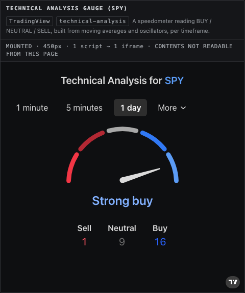
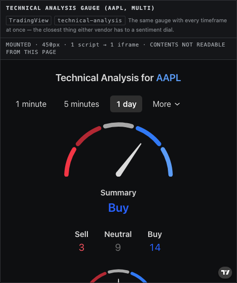
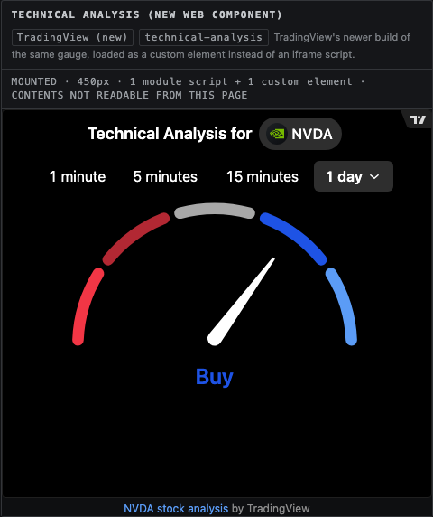
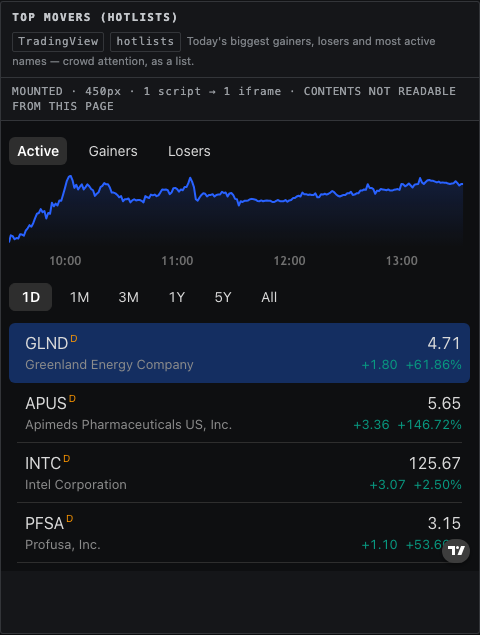
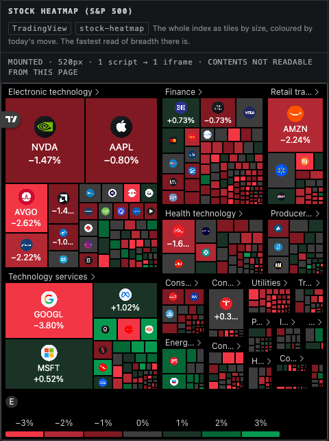
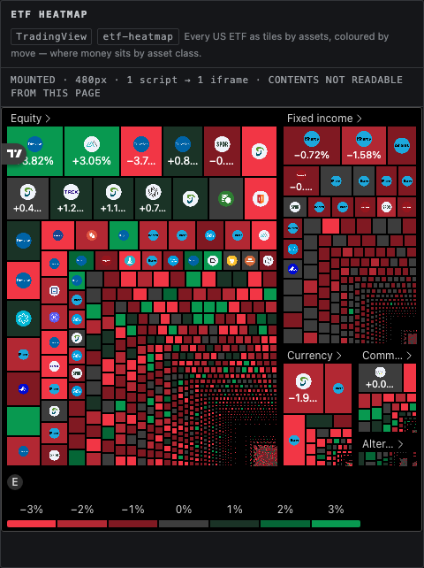
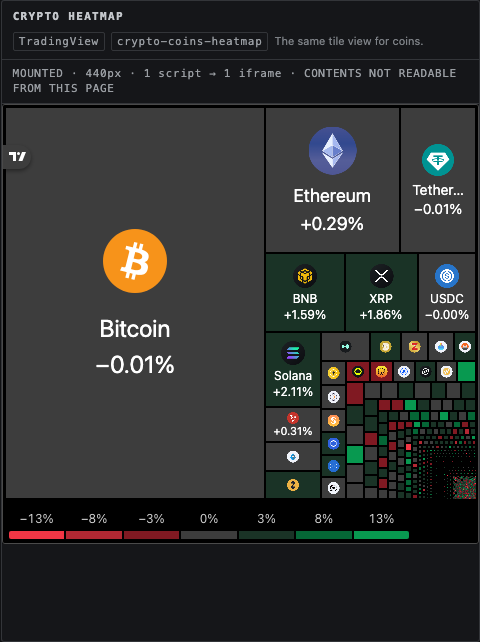
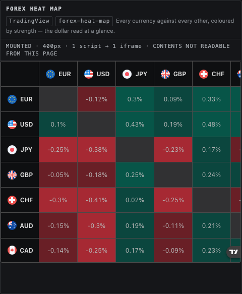
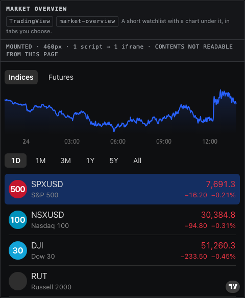
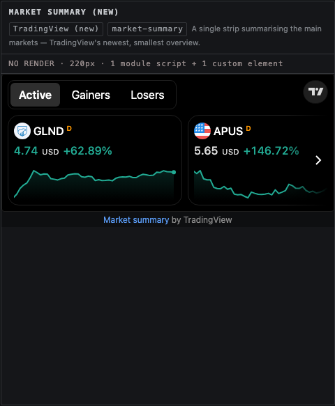
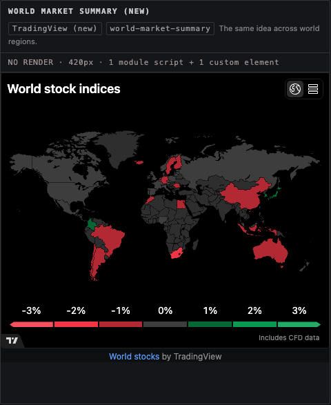
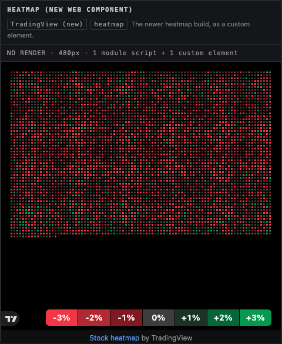
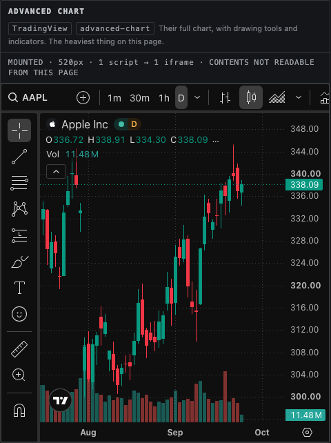
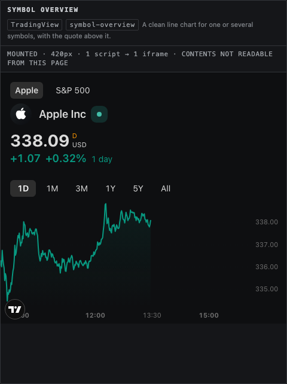
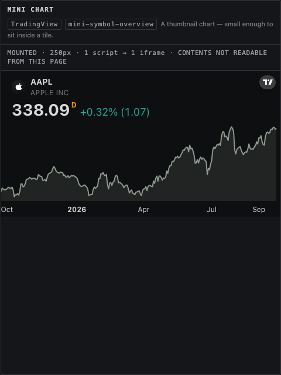
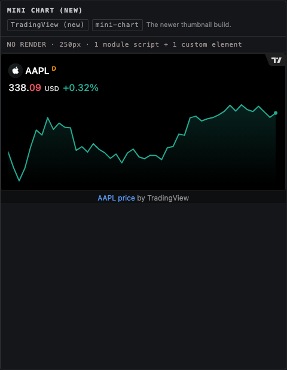
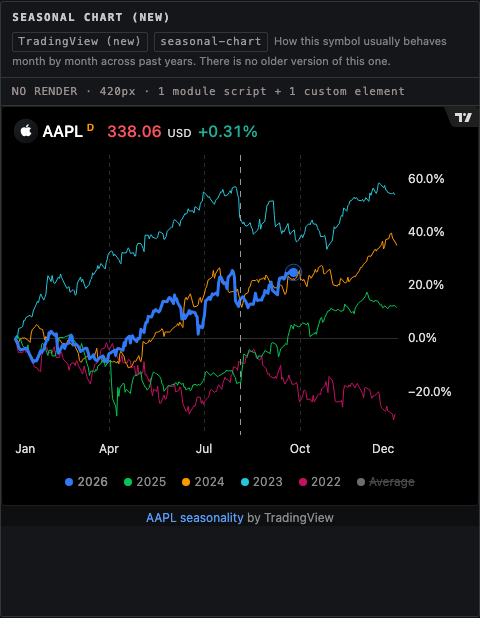
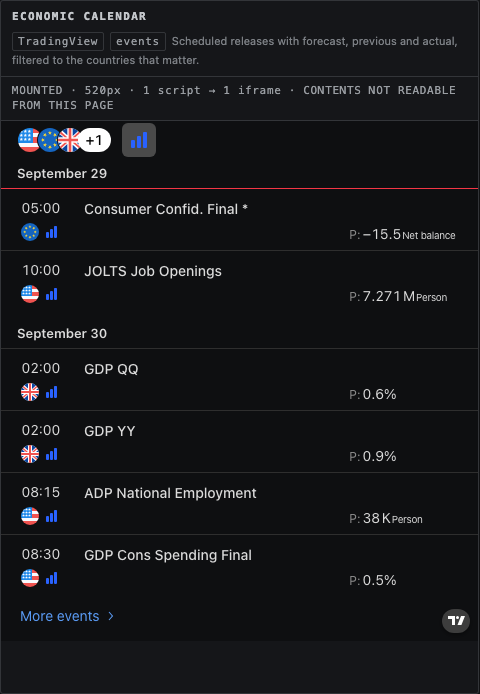
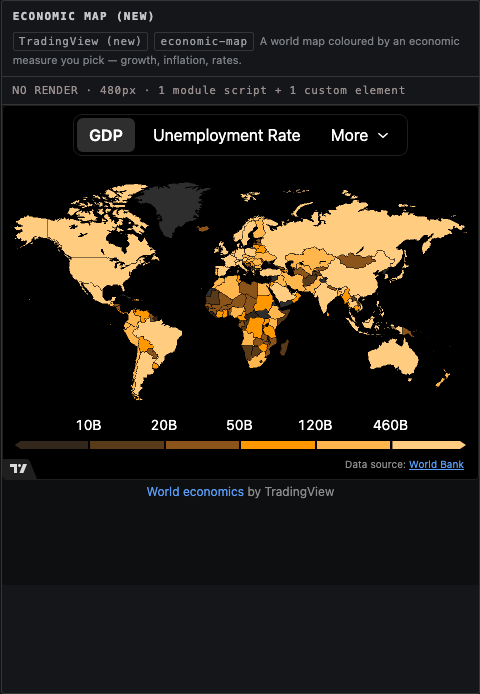
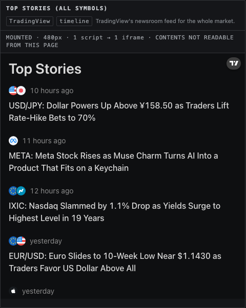
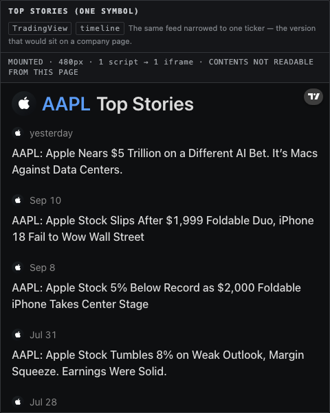
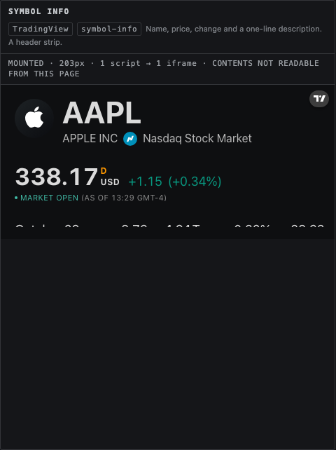
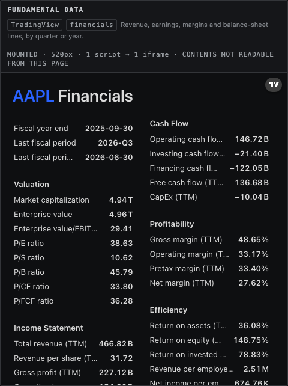
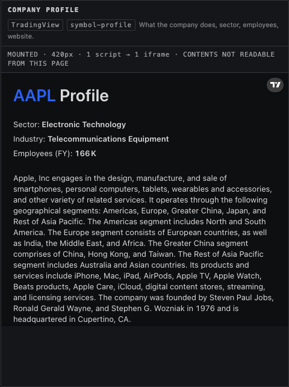
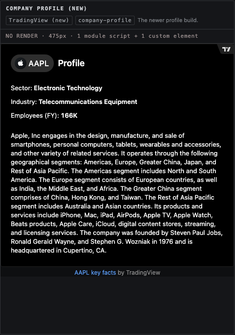
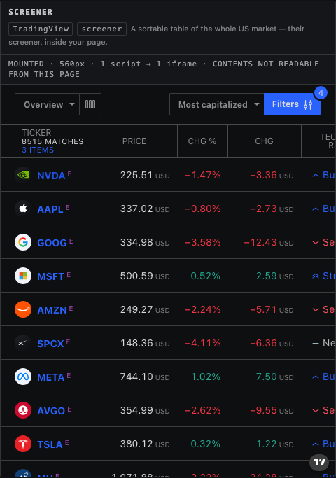
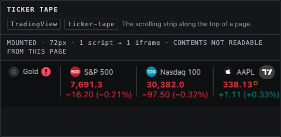
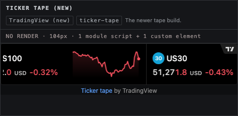
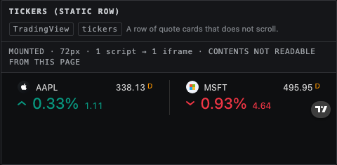
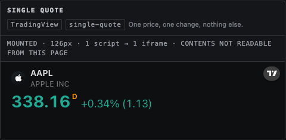
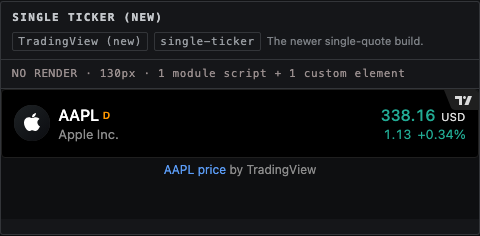
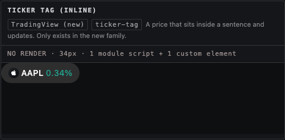
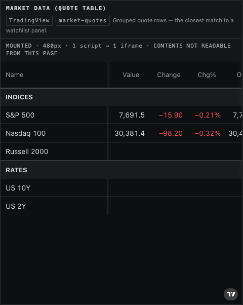
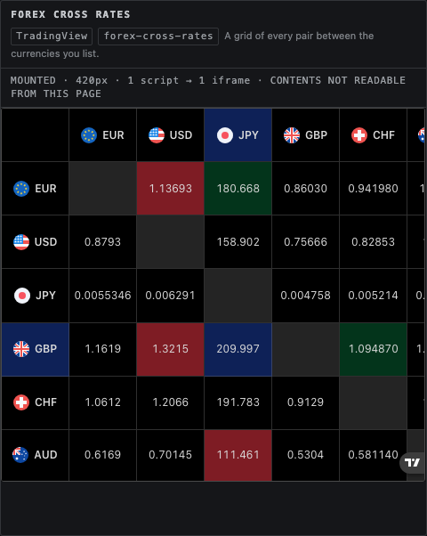
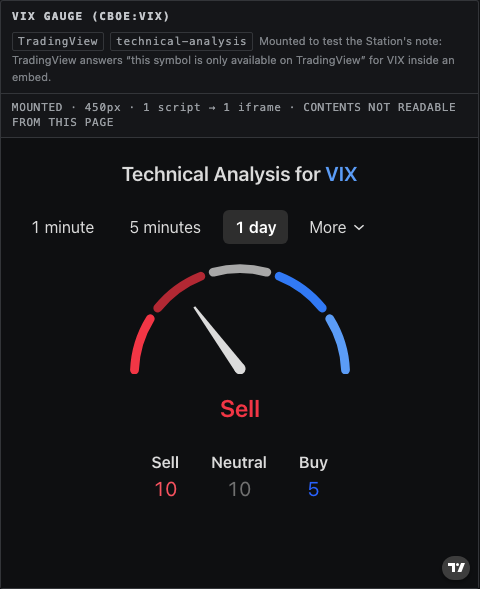
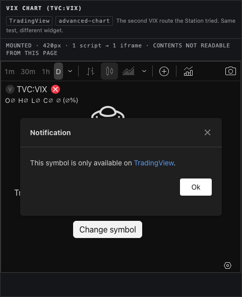
| Widget | Source | What came back |
|---|---|---|
| Investing.com Technical Summary | Investing.com | empty frame, 403 from their server |
| Investing.com technical chart | Investing.com | empty frame, 403 from their server |
| Investing.com economic calendar | Investing.com | empty frame, 403 from their server |
| Investing.com interest rates | Investing.com | empty frame, 403 from their server |
| VIX header (CBOE:VIX) | TradingView | VIX VOLATILITY S&P 500 INDEXCboe ` This symbol is only available on TradingView |
Apple ships no embeddable widget. iOS Stocks exists only inside iOS, so it cannot be put on this page, and no Apple image is copied here. Apple's own description: Track stocks on iPhone.
What its widgets show. Small: one symbol, price, today's change, and a sparkline of the session. Medium: four to six watchlist rows with price and change, or one symbol with a larger chart. Large: the watchlist plus top business headlines from Apple News.
Three habits worth copying, which cost nothing: the change is always shown twice at once, as an amount and a percent, in one coloured pill; the sparkline carries no axis, no grid and no labels; and the list never scrolls — it shows only the rows that fit. All three suit a dark, quiet board.
Two provisos on those five. The new family needs theme="dark" or it arrives on a white
background — measured: 92% light pixels without it, 1% with it. And all of them carry TradingView's own
colours and logo, which cannot be removed without their written permission.
Built by scripts/build-widget-scout.py from the headless run's own JSON
(2026-09-24 17:45:11 UTC). Screenshots are in shots/.